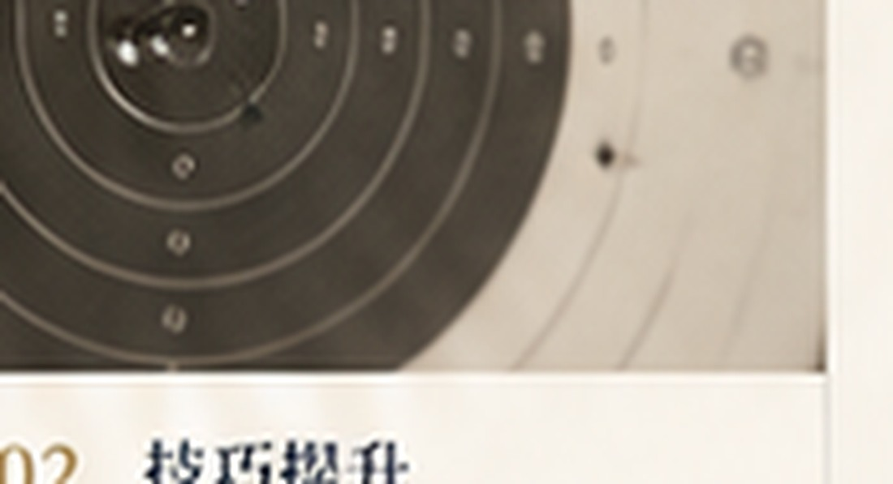
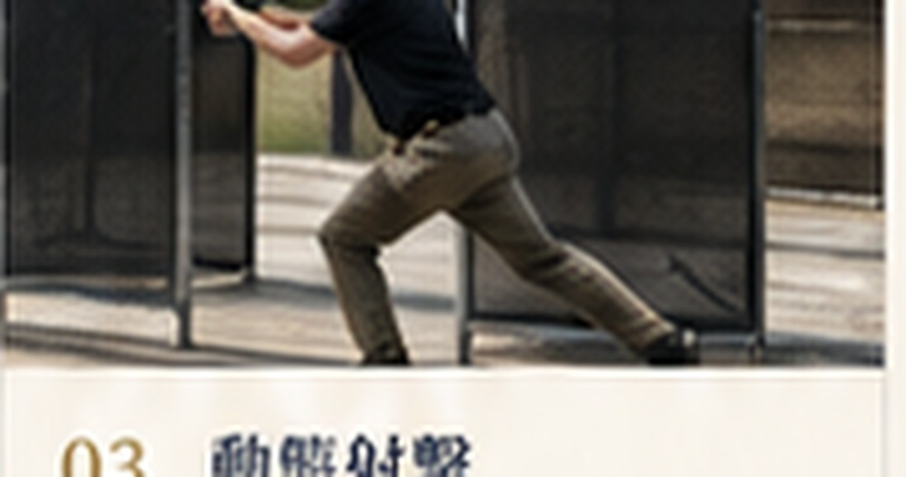

Private · Full-day · Bangkok / Rangsit
Step onto
the range.
A private shooting day built around progression, confidence and professional guidance — designed for first-timers, enthusiasts and small private groups.
Rangsit · North of Bangkok

1–8 guests
Solo guests, couples or small groups.About 100 rounds
Substantial trigger time within the day format.Rangsit
North of central Bangkok.Bangkok transfer
Transfer arrangements can be discussed.Photo & video
Professional content options are available.A different kind of Bangkok day
More than a range visit.
A full experience.
The structure keeps the richness of the original concept: visuals first, then a clear progression through the day, the coaching, the formats, the atmosphere and the booking path.
 Private coaching 01
Private coaching 01 Range atmosphere 02
Range atmosphere 02 Focus & control 03
Focus & control 03 A full-day format 04
A full-day format 04The experience journey
From first shot
to real progress.
The day is presented as a progression rather than a short range stop: fundamentals first, then control and confidence, then more engaging drills when appropriate for the participant’s level.
Personal guidance
Professional instruction, a private format and a pace adapted to the group. No previous shooting experience is required.

01
Step 01Get comfortable
Start with safety, handling, stance and the essential fundamentals before live-fire progression.

02
Step 02Build consistency
Work on control, accuracy and repeatability with structured feedback throughout the session.

03
Step 03Progress further
When your level allows it, the experience can move into more dynamic and engaging drills.
Why this format feels different
Not a few minutes.
A day built around you.
The emphasis is on learning and progression: understanding the session, handling safely, getting comfortable, practising under supervision and leaving with a much stronger sense of what you achieved.
1–8Private guests
≈100Rounds per guest
1 dayFull format
0Experience required
Experience formats
Choose your
experience.
Choose the core shooting-day format or ask for the more complete experience with travel and content options around the day. Current rates and available dates are confirmed directly.
Send preferred date + group size
ESSENTIALCore shooting-day experience
The private full-day experience focused on coaching and progression.
- Private full-day format
- Beginner-friendly professional guidance
- Approximately 100 rounds per guest in the published overview
- Structured skill progression
- Suitable for groups of 1–8
Current rateAsk by date + group size
Details ↗Full experience
PREMIUMExpanded all-in format
Build a more complete day around the shooting experience.
- Core private full-day experience
- Bangkok transfer arrangements
- Meal arrangements
- Professional photo option
- Cinematic video / edited content option
Current rateAsk by date + group size
Details ↗Gallery preview
More images.
More atmosphere.
The visual side is back at the centre of the site: large photography, asymmetric crops and a dedicated gallery page.
View full gallery ↗


Ready to step
onto the range?
Send your preferred date and number of participants to request current package details and availability.